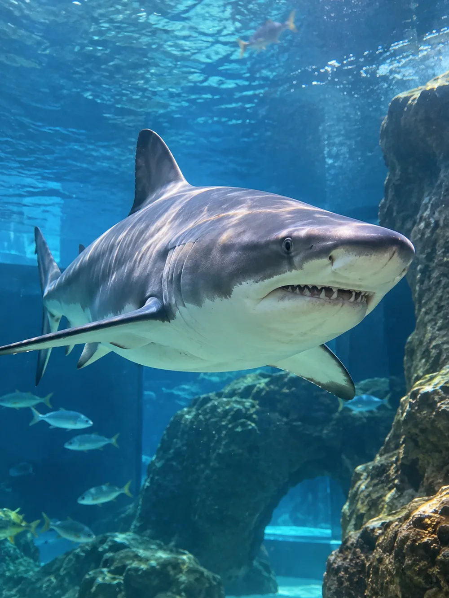

Aquarium Finisterrae
Acuario municipal junto a la Torre de Hércules, con cuatro salas y una colección de más de trescientas especies marinas. La sala Maremagnum es interactiva y el Nautilus reproduce el interior de un submarino rodeado de agua, además de la piscina exterior de focas. Es el plan más redondo de la ciudad para una mañana entera con niños de cualquier edad.
Paseo Alcalde Francisco Vázquez, 34, 15002 A Coruña Visitar web oficial